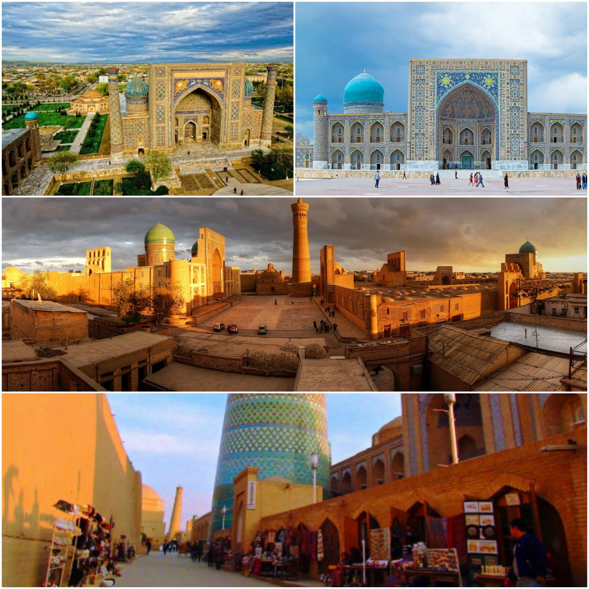

O‘zbekistonda turizm so‘nggi yillarda barqaror o‘sib bormoqda, chunki mamlakat o‘zini sayyohlik yo‘nalishi sifatida targ‘ib qilishga harakat qilmoqda. Hukumat tashrif buyuruvchilarni jalb qilish uchun viza tartibini yengillashtirish, infratuzilmani yaxshilash va mamlakat madaniy merosini targ‘ib qilish kabi turli tashabbuslarni amalga oshirdi. Oʻzbekiston oʻzining boy tarixi va meʼmoriy moʻjizalari, jumladan, qadimgi Ipak yoʻli shaharlari, ajoyib masjid va maqbaralar, yaxshi saqlangan eski shaharchalari bilan mashhur. Ushbu diqqatga sazovor joylar tarix, madaniyat va me'morchilikka qiziqqan sayyohlarni o'ziga jalb qiladi. Mamlakat, shuningdek, tog'larda sayr qilish, cho'lda tuyalar bilan sayohat qilish va mamlakatning xilma-xil landshaftlarini o'rganish kabi turli xil ochiq havoda mashg'ulotlarni taklif qiladi. Ayniqsa, Farg‘ona vodiysi o‘zining yam-yashil tabiati, xalq hunarmandchiligi bilan mashhur. Infratuzilma nuqtai nazaridan O‘zbekiston tashrif buyuruvchilarning mamlakat bo‘ylab sayohat qilishlarini osonlashtirish uchun transport tarmoqlari, turar joylar va turistik xizmatlarni yaxshilashga sarmoya kiritmoqda.